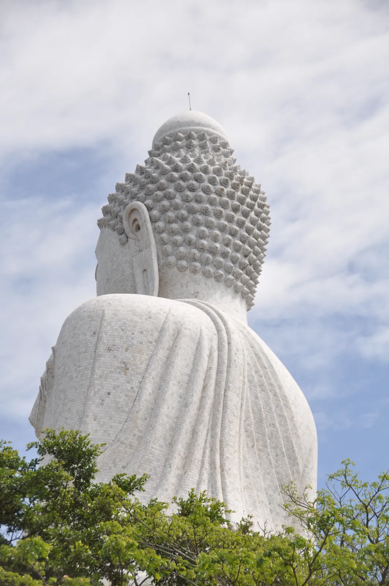
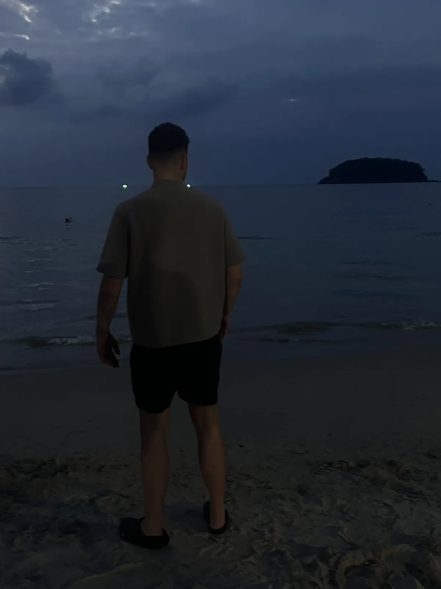
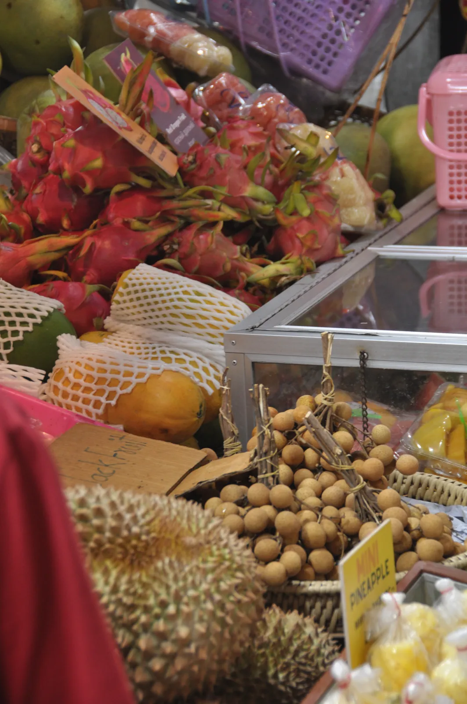
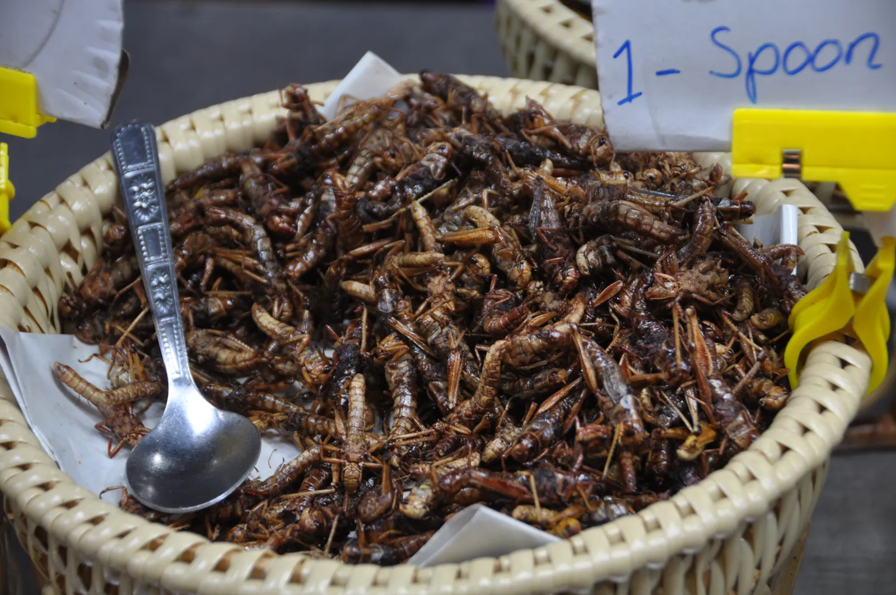
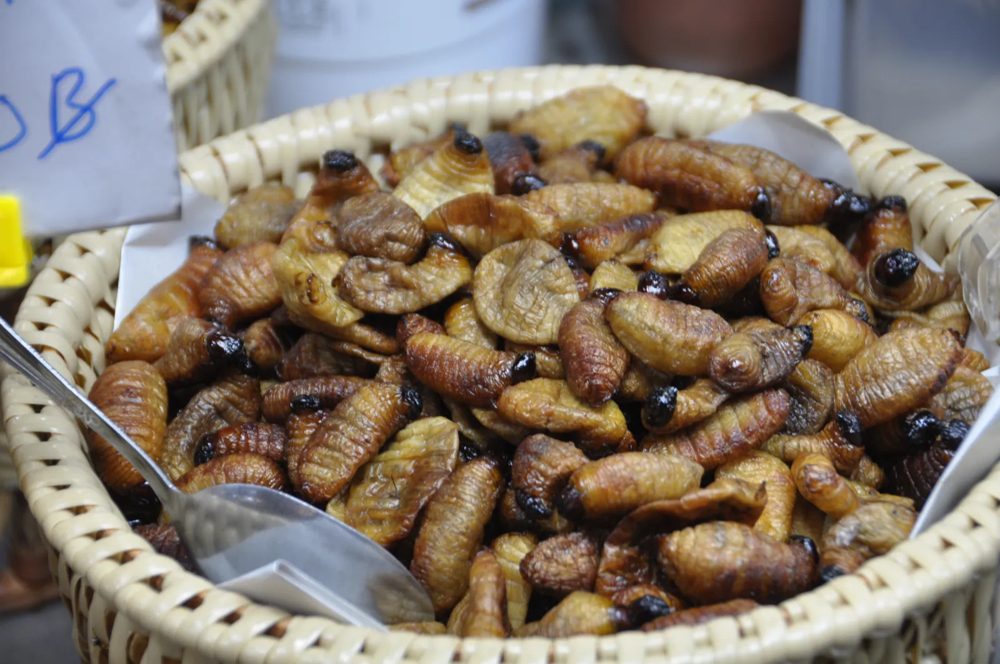
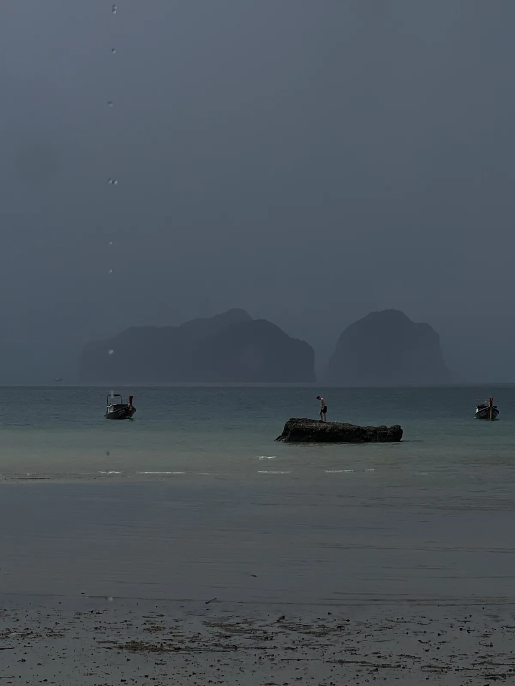

🇹🇭 Phuket Guide: Big Buddha, Altstadt, Phang-Nga-Bucht & Markt-Abenteuer

Inhaltsverzeichnis
Phuket ist Thailands größte Insel und für viele der Einstieg ins Land. Strände gibt es genug – aber die besten Momente liegen oft abseits davon: auf dem Markt, im Schrein, im Kanu.
Preise und Zeiten sind Richtwerte (Stand 2026).
Meine Story in Phuket
Knapp drei Wochen Thailand im Februar 2026: erst Phuket, dann Krabi. Ich hatte mit Strand gerechnet. Der Big Buddha sitzt 45 Meter hoch aus weißem Marmor über der Insel – von unten wirkt er fast unwirklich. In der Altstadt von Phuket bin ich zwischen bunten sino-portugiesischen Häusern in einen chinesischen Schrein gestolpert, mit goldenen Drachen und Räucherstäbchen. Und auf dem Markt lagen sie dann: frittierte Grillen und Seidenraupen-Puppen, bezahlt wird pro Löffel. Daneben Durian, Drachenfrucht und Longan, als wäre das alles das Normalste der Welt. Hier ist es das auch.





Dieser Guide enthält Werbe-Links (GetYourGuide, Omio). Wenn du darüber buchst, bekomme ich eine kleine Provision – du zahlst keinen Cent mehr. Preise und Öffnungszeiten ändern sich – vor dem Besuch kurz prüfen.
Auf einen Blick
So kommst du nach Phuket und herum
Phuket hat einen internationalen Flughafen, der von Bangkok und anderen Drehkreuzen angeflogen wird. Auf der Insel sind Roller, Taxi-Apps und Songthaews üblich; Preise für Taxis vorher klären. Wer Roller fährt, braucht passenden Führerschein und Helm – das Risiko ist real, informiere dich vorab.
1. Must-Sees
Big Buddha
45 Meter hoch aus weißem Marmor über der Insel. Auf Google 4,6 Sterne bei über 40.000 Bewertungen. Der Eintritt ist laut Besuchern frei; achte auf angemessene Kleidung (Schultern und Knie bedeckt).
Tipp: Affen rund um die Anlage: lose Sachen gut verstauen.
Altstadt & chinesischer Schrein
Zwischen bunten sino-portugiesischen Häusern bin ich in einen chinesischen Schrein gestolpert – goldene Drachen und Räucherstäbchen. Abends lieber hier schlendern als über die Bangla Road.
2. Hidden Gems & Erlebnisse
Phang-Nga-Bucht per Kanu💎 Hidden Gem
Kalkfelsen, Höhlen und stilles Wasser: Besucher beschreiben Kanutouren durch die Bucht als Highlight. Auf Google 4,7 Sterne. Touren starten laut Besuchern früh am Morgen und dauern bis zum späten Nachmittag.
Tipp: Früh buchen; die guten Zeiten sind schnell weg.
Markt: Grillen, Seidenraupen, Durian
Frittierte Grillen und Seidenraupen-Puppen, bezahlt wird pro Löffel. Daneben Durian, Drachenfrucht und Longan.
Was Thailand ausmacht
Thailand ist das einzige Land Südostasiens, das nie von einer europäischen Macht kolonisiert wurde – darauf sind die Menschen bis heute stolz. Über 90 Prozent sind Buddhisten, und überall stehen kleine Geisterhäuschen mit Opfergaben vor Häusern und Geschäften. Bis 1939 hieß das Land Siam.
Mein Fazit: Phuket für den Einstieg, Krabi für die Landschaft. Siehe meinen Krabi-Guide.
Dein Plan
Tag 1: Ein Tag auf Phuket
- Vormittag – Big Buddha
- Nachmittag – Altstadt und Schrein, Markt
- Abend – Altstadt statt Bangla Road
Häufige Fragen
Phuket oder Krabi?
Noels Fazit: Phuket für den Einstieg, Krabi für die Landschaft.
Wann ist die beste Reisezeit?
Grob November bis April ist trockener; Noel war im Februar dort.
🗺️ Alle Orte auf meiner Karte → Mehr Guides und Reels auf Instagram: @hiddengem.atlas
Guide teilen: Per WhatsApp